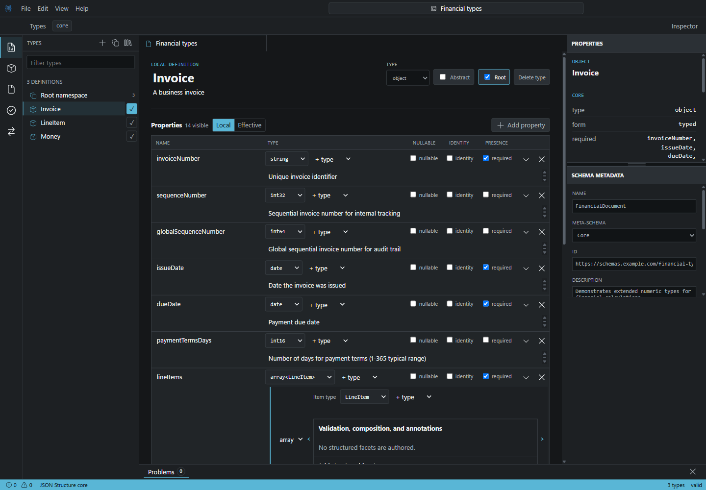
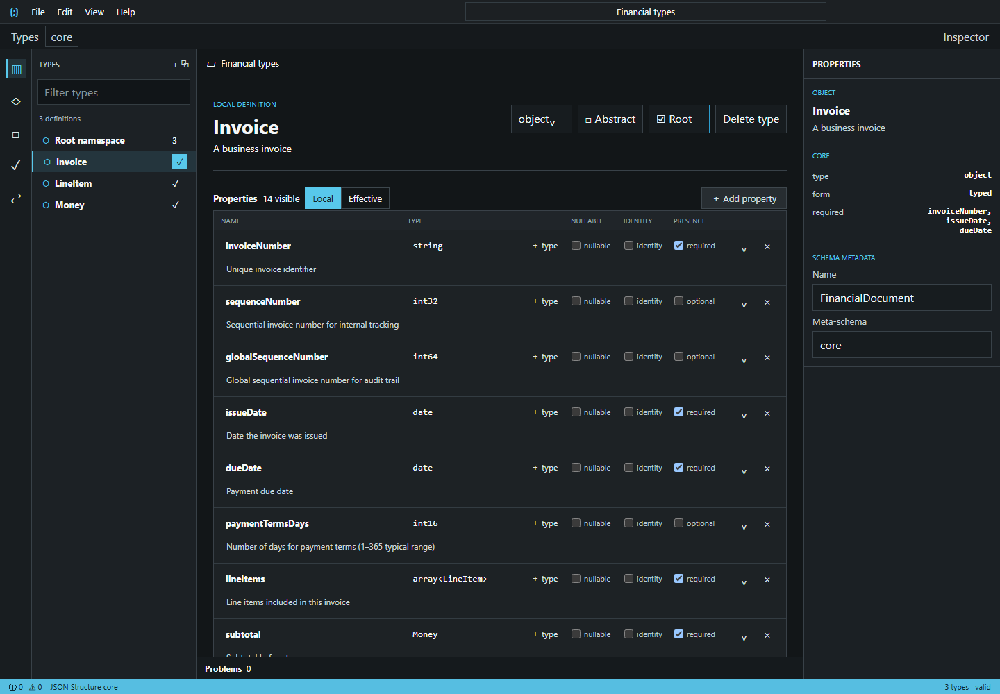

Proposal 11 — Compact inactive property rows
Reduce scanning height without hiding authored information or relocating editing.

Open full-size Before

Open interactive AfterChange
Inactive name, type, presence, and description values render as compact readable text in the existing grid.
Unchanged
Click, Tab, or Enter activates the same field in place. Disclosure, direct facets, keyboard flow, and the informational Inspector remain.